耀坤飞控（YaoKunDrone）是一套完全自主研发的、基于 ESP32-S3 微控制器的四轴无人机飞控固件。它运行在 Arduino 框架上，把姿态解算、串级 PID 控制、安全保护、遥测上报和浏览器遥控界面整合进 5173 行可读性很强的 C/C++ 代码中，无需图形化上位机工具、无需专用地面站，一台手机连上飞机热点打开网页就能操控、调参、看状态。
这个项目的出发点不是做一个「能飞的玩具」，而是做一套能被完整读懂、能被放心修改的开源飞控教学与实践平台。因此代码里的每一个常数都有出处注释，每一处非直觉的设计都写清了「为什么这么写」和「不这么写会怎样」——它同时也是一份可运行的中文飞控教材。
当前固件版本 v1.1（2026-10-23），相对 v1.0 的三项变更（均由真机试飞问题驱动，详见对应章节）：① 关闭芯片欠压复位（brownout）——修复地面临界油门必重启的问题，见第七节；② 偏航环加入积分 Ki=0.005——消除电机/桨扭矩不对称导致的匀速自旋，见 5.5 节；③ 偏航扭矩符号适配（kYawTorqueSign）——适配实测电机布局，修复起飞加速自旋，见 5.3 节。
整机由一块免费打样的 PCB 机架 + ESP32-S3 开发板 + MPU6050/6500 模块 + 四个 8520 空心杯电机组成，飞控热点是 YaoKun_Drone。以下实物图来自开源仓库 github.com/YaoKunS/ESP32-Drone：
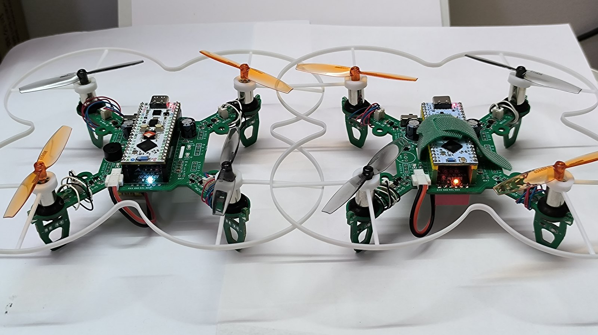
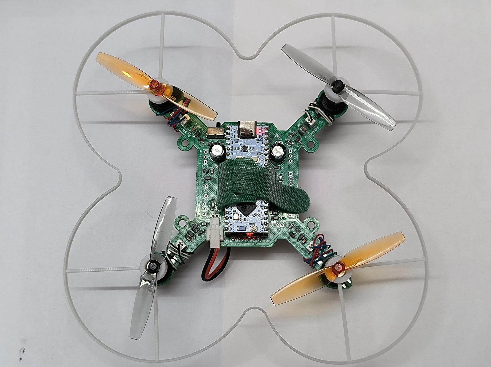
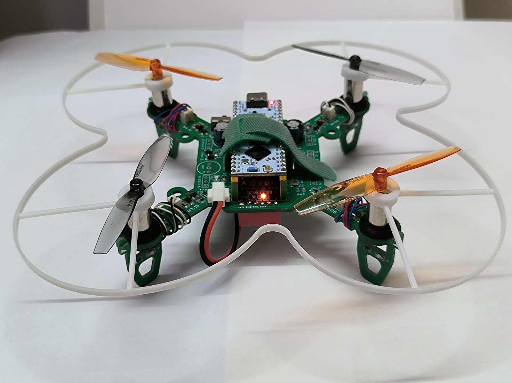
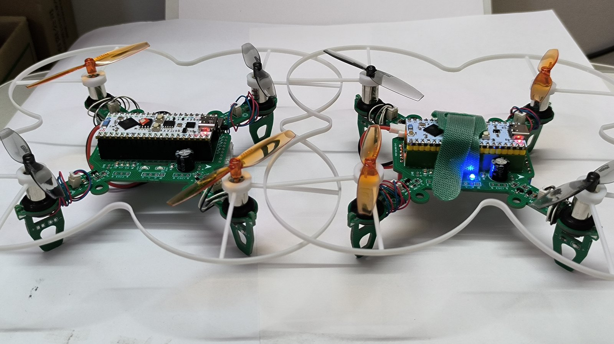
本机是「纯姿态自稳 + 手动油门」飞控，没有任何位置或速度传感器。
机身上只有一个六轴 IMU，没有 GPS、气压计、激光测距、光流、磁罗盘。所以：
| 能力 | 说明 |
|---|---|
| 能做 | 姿态自稳——松开摇杆时机体会自己把水平面稳住；横滚、俯仰、偏航三轴可控；油门手动。 |
| 不能做 | 悬停定点。松杆时姿态被稳住，但会保持既有水平速度继续飘；松油门就掉高度。 |
| 因此 | 飞行时需要持续微操修正，属于「运动相机式的手动飞行」体验，而非消费级无刷机的 GPS 定点体验。 |
想获得真正的定点悬停能力，需要接入激光测距（VL53L1X）+ 光流（PMW3901）——本工程已为此预留了 SPI 与第二组 I2C 引脚，详见 第十六节 扩展路线。
| 项目 | 内容 |
|---|---|
| 主控平台 | ESP32-S3（默认适配立创 ESP32-S3 R8N8 开发板，同时兼容 ESP32-S3 Supermini 系列） |
| 姿态传感器 | MPU6050（I2C）或 MPU6500（SPI），开机自动探测，无需手动配置 |
| 动力输出 | 四路 LEDC 硬件 PWM，20 kHz / 10-bit |
| 通信方式 | WiFi SoftAP + WebSocket（飞控自建热点，无需路由器） |
| 代码仓库 | github.com/YaoKunS/ESP32-Drone（GPL v3 开源，含全部源码与实物图） |
| 开源硬件 | 嘉立创开源硬件平台 · 耀坤的主页（oshwhub.com/lindahe）——耀坤无人机（星火计划 2026 开源项目），原理图 / PCB 免费下载 |
| 元器件套件 | 淘宝店「耀坤智联」shop35432590.taobao.com，基础元件仅需 9.9 元 |
| 视频教程 | 哔哩哔哩 B 站「耀坤智联」space.bilibili.com/3707011699050767 |
横滚与俯仰采用「角度外环 + 角速率内环」串级结构，偏航为单环角速率控制。500 Hz 固定周期调度。
四电机分处机臂对角，单电机故障时仍保留剩余推力与部分控制能力，容错优于 H 型。
按油门线性缩放控制量，抵消电调线性区对操控性的侵蚀，悬停时仍能精细微调。
PID 输出触顶时积分项按 0.99 系数缓慢衰减，防止限幅期间积分失控，恢复后姿态猛甩。
|a| 偏离 1g 的程度得到信任度，据此动态调整 Madgwick 的 β 或互补滤波的 α。剧烈机动或自由落体时滤波器自动退化为纯陀螺积分，不会被错误的重力方向带跑。SwapXY / FlipX / FlipY / FlipZ 四个开关适配不同模块的贴装朝向，换 IMU 不用改驱动。disarmNow() 出口。YaoKun_Drone / 12345678，IP 192.168.4.1），野外无网环境照样能飞。config.h 中改一行宏即可切换 PCB，引脚完全隔离互不干扰。整套固件按职责切成五层，层与层之间只通过 drone_types.h 中声明的接口通信，不存在跨层直接操作。这让「换一块 PCB」「改一个算法」「重写整个界面」都可以各自独立进行，互不牵连。
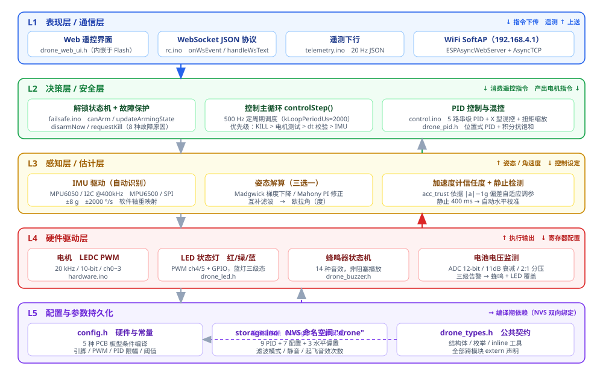
为什么要分层？本项目支持多种 PCB 板型（4 种已实现、4 种规划中），而板型差异只体现在 config.h 的引脚定义里。若硬件访问散落在算法代码中，换板型就要翻遍全工程。把所有 ledcWrite、Wire.begin、SPI.transfer 收敛到 hardware.ino 之后，上层算法完全不知道自己跑在哪个引脚上——这是本工程能以单份代码覆盖多板型的前提。
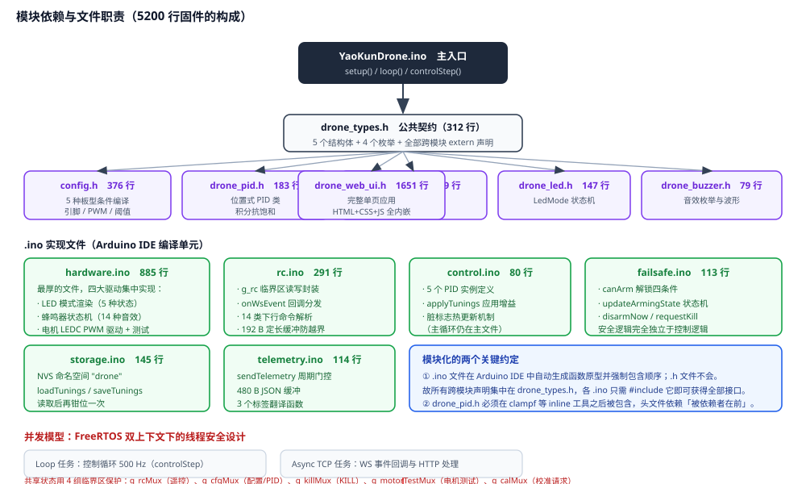
| 文件 | 行数 | 职责 |
|---|---|---|
YaoKunDrone.ino | 598 | 主入口：setup() / loop()，以及控制流水线 controlStep()、WiFi/Web 启动、电压告警与校准辅助 |
drone_types.h | 312 | 公共契约：5 个结构体、4 个枚举、inline 工具函数、全部跨模块 extern 声明 |
config.h | 376 | 多 PCB 板型条件编译 + 全部系统常量（引脚 / PWM / PID 限幅 / 阈值） |
hardware.ino | 885 | 四类硬件驱动实现 + Madgwick / Mahony / Mpu6050 / Mpu6500 / ImuDriver 五个类的方法 |
drone_imu.h | 199 | 上述五个类的声明 + accelToRollPitchDeg / isImuStationary 两个 inline 辅助 |
drone_pid.h | 183 | 通用位置式 PID 类，带积分抗饱和与输出限幅（含大段教学式注释） |
rc.ino | 291 | 遥控指令临界区读写封装 + WebSocket 事件回调与 14 类下行命令解析 |
control.ino | 80 | 5 个 PID 实例定义、增益应用、脏标志热更新机制 |
failsafe.ino | 113 | 安全核心：解锁条件、状态机、上锁与紧急停止，完全独立于控制算法 |
storage.ino | 145 | NVS 命名空间 "drone" 的参数加载与保存，含二次限幅 |
telemetry.ino | 114 | 遥测 JSON 组帧与周期门控，三个枚举标签翻译函数 |
drone_led.h / drone_buzzer.h | 147 / 79 | LED 模式枚举与呼吸算法 / 音效枚举与蜂鸣器状态机接口 |
drone_web_ui.h | 1651 | 完整单页前端应用，全内嵌，无外部资源依赖 |
两个必须知道的 Arduino 约定：① .ino 文件会被 IDE 自动生成函数原型并强制包含，而 .h 不会——所以跨模块声明统一集中在 drone_types.h，各 .ino 只需 #include 它就能拿到全部接口。② drone_pid.h 内部用到了 clampf()，而 clampf 定义在 drone_types.h 里，因此该头文件必须在工具函数定义之后才被包含——头文件依赖遵循「被依赖者在前」的基本准则。
loop() 被刻意做成极简：刷新 LED、推进蜂鸣器状态机，然后检查是否到了控制周期。没到就 delayMicroseconds(50) 空转，让出 CPU 给 WiFi 任务；到了就以累加器方式补偿时间基准，把滞后的时间槽一次补齐，然后进入 controlStep()。
// 时间基准与补偿：即使某一周期超时，也不会让后续周期永久漂移
if ((int32_t)(now_us - next_us) >= 0) {
while ((int32_t)(now_us - next_us) >= 0) next_us += kLoopPeriodUs;
const float dt = (now_us - last_us) * 1e-6f;
last_us = now_us;
controlStep(dt);
// …电压告警 200 ms、蓝灯 50 ms、告警 LED 覆盖
} else {
delayMicroseconds(50);
}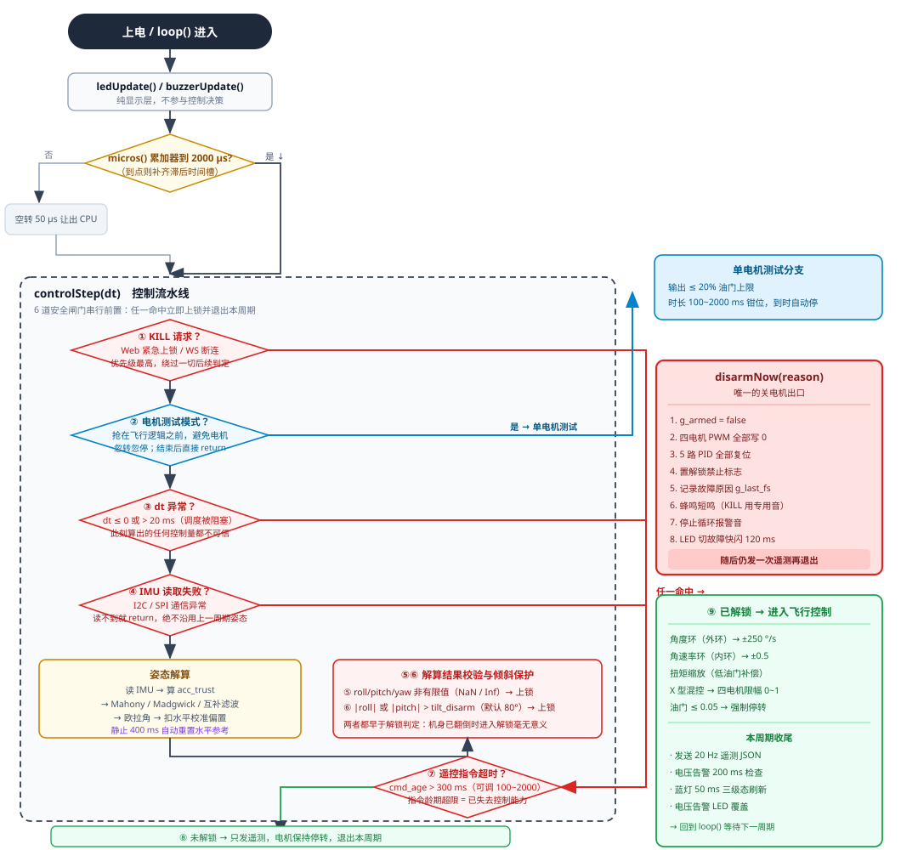
controlStep() 控制流水线：KILL → 电机测试 → dt 校验 → IMU 读取 → 姿态解算 → 倾斜保护 → 遥控超时 → 解锁状态机 → PID 混控这个流水线的顺序不是随意排的，每一步都在为「万一前面已经出问题了，后面不该再执行」服务：
| 次序 | 环节 | 为什么放在这个位置 |
|---|---|---|
| ① | KILL 请求 | 最高优先级。用户按下「紧急上锁」时，即使此刻电机正在转、IMU 已经失灵，也必须立刻停机，不能被后续任何判定阻挡。 |
| ② | 电机测试模式 | 一旦进入测试就要跑完整个时长，中途被飞行逻辑插一脚会造成电机忽转忽停。所以它抢在控制逻辑之前，且结束后直接 return。 |
| ③ | dt 有效性 | dt 异常意味着调度被长时间阻塞，此时算出的任何控制量都不可信，必须先停下来说明原因。 |
| ④ | IMU 读取 | 没有姿态数据就无从控制。注意 IMU 读不到就 return，绝不拿上一周期的旧姿态凑合——那会让飞机"凭记忆"飞。 |
| ⑤⑥ | 姿态 NaN 校验 倾斜保护 | 两者都在解算之后立刻判定，早于解锁状态机。原因很实际：如果飞机已经翻倒或姿态发散，此时进入解锁流程毫无意义。 |
| ⑦ | 遥控超时 | 指令龄期超限说明操纵者已经失去控制能力，属于"不该继续飞"的信号，排在解锁判定之前。 |
| ⑧ | 解锁状态机 | 只有确认"应当处于飞行状态"之后，才进入 PID 与混控。上锁状态下依然发送遥测，保证界面随时能看到状态。 |
一个容易被忽略的正确设计：安全路径上每一次上锁后都会调用 sendTelemetry() 再 return。也就是说即使飞机正在故障，Web 界面依然能实时看到故障原因。很多飞控在保护状态下就哑了，用户只能盲猜哪里出了问题。
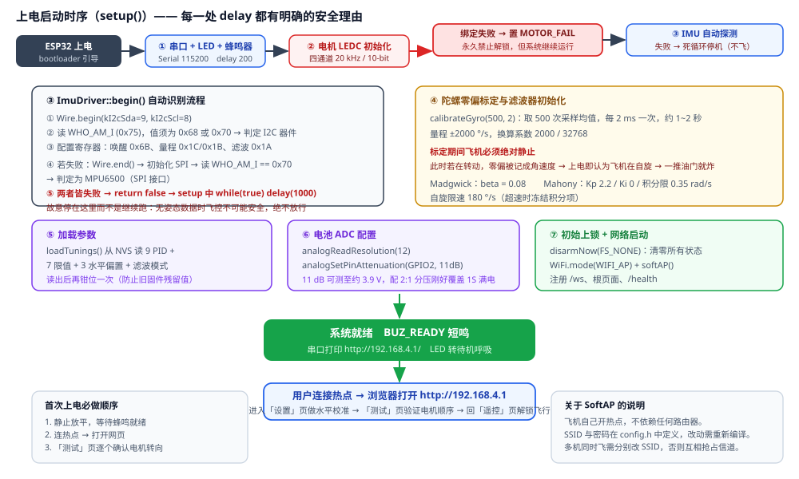
setup() 启动时序：串口 → 电机 LEDC → IMU 自动探测 → 陀螺标定 → 参数加载 → 上锁 → 自建热点两个不可省的等待：
① 陀螺零偏标定约需 1~2 秒（500 次采样 × 2 ms）。标定期间飞机必须绝对静止——若在转动，零偏会被记成角速度，飞机上电后认为自己正在自旋，一推油门就会猛甩。
② IMU 探测失败会直接停机：begin() 返回 false 时 setup 进入 while(true) delay(1000) 死循环。这是刻意设计——没有姿态数据时飞控不可能安全，绝不放行让用户以为"能飞"。
电机 LEDC 绑定失败则不同：它只置 FS_MOTOR_FAIL 标志并禁止解锁，系统继续运行。因为此时 IMU、姿态解算、Web 界面全部正常，用户还有机会打开网页读日志定位问题，直接死循环反而失去诊断手段。
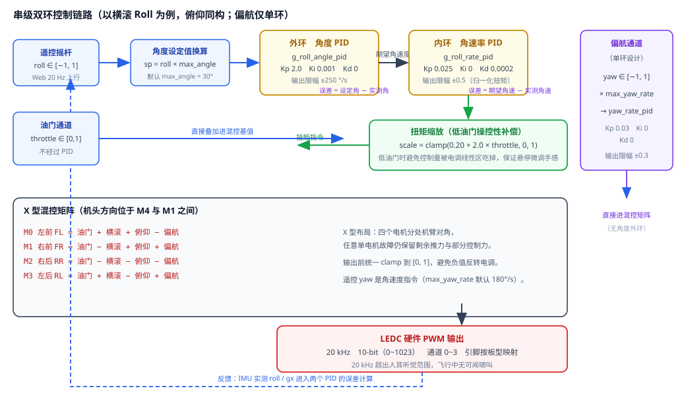
单环控制的根本矛盾在于：角度误差和角速度误差需要不同的增益量纲。飞控里直接用「角度误差 × Kp」去出电机扭矩，会出现典型的两难——
串级把这两个诉求拆到两个不同量纲的环上：
这是 Betaflight / PX4 等主流飞控都采用的经典结构，不是本项目的发明。但多数教程讲到「串级 PID」就停了，本工程把每个环的量纲、限幅值和整定思路都写在代码注释里，可以逐行对照理解。
偏航没有角度外环。因为本机没有磁罗盘、没有任何绝对航向参考，偏航角是陀螺仪纯积分出来的，误差会随时间无限制漂移。给一个会漂移的量设外环，等于给积分漂移又套一层积分，稳态误差反而更糟。所以偏航直接采用角速率单环（g_yaw_rate_pid），把「指令要转多快」这件事直接做对，不去管最终转到哪个朝向。输出限幅 ±0.3，比横滚俯仰的 ±0.5 更保守——因为偏航只影响两个电机，权限小一点更安全。v1.1 起偏航环带有小积分（Ki=0.005），用积分项自动抵消电机/桨扭矩不对称的合力，消除匀速自旋（见 5.5 节说明）。
yaw_t = yaw_torque * kYawTorqueSign // 偏航符号适配系数（见下方说明）
M0 左前 FL = throttle + roll_torque + pitch_torque - yaw_t
M1 右前 FR = throttle - roll_torque + pitch_torque + yaw_t
M2 右后 RR = throttle - roll_torque - pitch_torque - yaw_t
M3 左后 RL = throttle + roll_torque - pitch_torque + yaw_t符号的来历：横滚靠对角电机差速（FL+RL 增、FR+RR 减产生右倾），俯仰靠前后电机差速，偏航靠同侧反向旋转（左侧减、右侧增产生偏航）。三者叠加后再限幅到 [0, 1]。
偏航符号为什么要乘系数：混控默认约定电机旋向为「左前=逆时针、右前=顺时针、右后=逆时针、左后=顺时针」（对角两两同向）。而 v1.1 实测装机的旋向恰好每颗都相反（左前 GPIO16=顺、右前 GPIO6=逆、右后 GPIO5=顺、左后 GPIO15=逆，对角仍两两同向）——这种布局本身合法，但偏航反扭矩方向整体翻转：不翻转符号时偏航环变成正反馈，起飞后机头越转越快、配合倾斜后推力矢量绕圈，表现为「加速自旋 → 螺旋升天」。解决方式是在 PID 输出之后、进混控之前乘 kYawTorqueSign = -1（config.h）：翻转点选在这里，摇杆杆向、遥控器通道方向、姿态球全部不用改；横滚/俯仰扭矩只与电机位置有关，位置没变故不受影响。
混控符号必须和实际电机安装方向一致，否则偏航环会失效甚至正反馈——表现为起飞后匀速自旋（布局对角同向但整体反向）或加速自旋螺旋升天（相邻同向的非法布局，任何混控都救不了）。首次装机请务必「不装桨」用「测试」页逐个确认电机转向（见第十二节第 4 步），再决定是调电机线序还是改 kYawTorqueSign。详见 第十二节 使用方法第 3 步。
const float torque_scale = clampf(cfg.torque_scale_min + throttle * cfg.torque_scale_slope, 0.0f, 1.0f);
// 默认 = 0.20 + throttle × 2.0
roll_torque = g_roll_rate_pid.update(...) * torque_scale;为什么需要它：无刷电调在低油门区存在明显的死区与非线性。悬停时油门在 30% 上下，正是线性最差的区域，直接输出 0.1 的扭矩差，实际转速差可能只有 0.02——摇杆推到底飞机几乎没反应，"手感发死"。乘上缩放系数后（30% 油门时 scale ≈ 0.8），同样的 PID 输出能换来更明显的实际转速差，微调就灵活了。
代价是高油门时缩放系数会超过 1 被钳到 1，等于不做补偿——这正是想要的：高速时本来就不需要额外放大，否则容易振荡。
| 控制器 | 默认 Kp / Ki / Kd | 输出限幅 | 物理含义 |
|---|---|---|---|
| 角度环（横滚 / 俯仰共用） | 2.0 / 0.001 / 0 | ±250 °/s | 输出是期望角速度，单位 °/s |
| 角速率环（横滚 / 俯仰共用） | 0.025 / 0 / 0.0002 | ±0.5 | 输出是归一化扭矩，无量纲 |
| 偏航角速率环 | 0.030 / 0.005 / 0 | ±0.3 | 限幅更保守，因只影响两电机 |
注意外环 Ki = 0.001 很小——这是有意的。姿态环的稳态误差本来就由重力静力学自然补偿（机体倾斜时重力本身产生恢复力矩），过大的积分反而会在持续倾斜时积累大量风控量，退出倾斜时产生严重过冲。横滚/俯仰的角速率环完全不用积分（Ki = 0），因为陀螺零偏在标定阶段已经被减掉了。
偏航环的 Ki = 0.005 是 v1.1 新加的（此前为 0）。偏航是单层角速率环，没有外环兜底，而四颗电机与桨的扭矩永远不可能完全对称——这个不对称合力需要一个恒定的反向扭矩去抵消。纯 P 控制器消除稳态扰动的唯一方式是「保留一点残余转速」：转起来产生误差、P 项输出反扭矩与之平衡，于是飞机会匀速缓慢自旋（近地面地效还会放大不对称）。加入小积分后，I 项约 1 秒内即可积出抵消不对称所需的反扭矩，自旋消失；PID 类自带「输出限幅时积分 ×0.99 衰减」的抗饱和机制，不会积爆。⚠️ 从 v1.0 升级且板子里保存过参数的用户：请到网页把偏航 Ki 手动改为 0.005（或点「恢复默认」）；整片刷写会清 NVS，新默认自动生效。
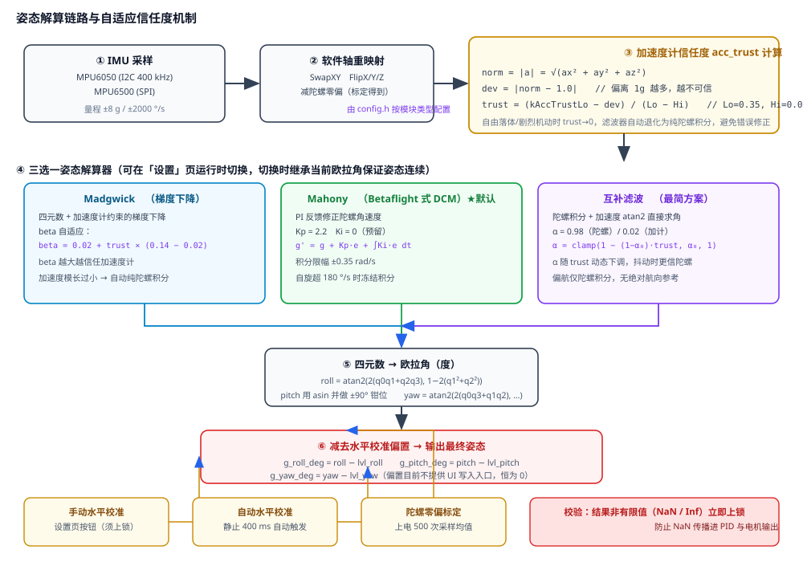
这是本工程在姿态估计上最值得说的一处设计。加速度计能测重力方向，陀螺仪能测角速度，两者是互补的——但加速度计只在"没有额外加速度干扰"时才可信。飞机一拉升，加速度计读到的是「重力 + 推力加速度」的合力，方向就不再代表水平面了；如果此时还拿它去修正姿态，就会把不该有的修正加进去，姿态越修越偏。
const float acc_norm = sqrtf(ax*ax + ay*ay + az*az);
const float dev = fabsf(acc_norm - 1.0f); // 偏离 1g 多少
if (kAccTrustLo > kAccTrustHi)
acc_trust = (kAccTrustLo - dev) / (kAccTrustLo - kAccTrustHi); // 线性映射到 0~1
acc_trust = clampf(acc_trust, 0.0f, 1.0f);| 参数 | 值 | 含义 |
|---|---|---|
kAccTrustHi | 0.08 | 偏离小于 0.08 g 视为完全可信，trust = 1 |
kAccTrustLo | 0.35 | 偏离大于 0.35 g 视为完全不可信，trust = 0（纯陀螺积分） |
trust 随后被送进两个地方：Madgwick 的 β 线性插值（β = 0.02 + trust × 0.12）、互补滤波的 α 动态下调，以及 Mahony 的 PI 修正项整体乘以 trust。三套解算器因此共享同一个"该信谁"的判断，行为一致。
| 解算器 | 状态 | 算法要点 | 适用场景 |
|---|---|---|---|
| Mahony | 默认 | 用外积计算姿态与重力方向的误差向量 e，以 g' = g + Kp·e + ∫Ki·e dt 修正角速度再积分四元数。积分限幅 ±0.35 rad/s，自旋超 180 °/s 时冻结积分防止发散。 |
默认选择。计算量适中、参数少、对零偏不敏感，与 Betaflight 同源，资料多。 |
| Madgwick | 可选 | 梯度下降法，把重力对齐问题写成目标函数，用 β 步长做梯度下降。β 自适应插值到 0.02~0.14。加速度模长过小时自动切纯陀螺积分。 | 想自己调 β 感受"信任度"效果时；需要理解梯度下降的读者。 |
| 互补滤波 | 可选 | 最朴素：陀螺积分 + 加速度 atan2 直接求角，按 α = 0.98 一阶互补。α 随 trust 动态上调（更信陀螺）。 |
教学首选，公式最直观；也是验证另两套是否出问题的对照组。 |
切换时如何保持姿态连续？若直接换解算器，新解算器内部四元数还是单位四元数（水平），而飞机实际已经倾斜了几十度——切换瞬间姿态会突然"跳回零"，控制环立刻输出满扭矩把飞机抽飞。所以代码里先把旧解算器的当前欧拉角取出来，用 setEulerDeg() 注入新解算器，互补滤波则直接接管内部状态，三者对齐后再继续。这是本工程里一个容易被忽略但至关重要的细节。
| 方式 | 触发条件 | 行为 |
|---|---|---|
| 手动校准 | 「设置」页点击按钮（须上锁，发 CAL,LEVEL） | 读取当前加速度计解算的水平角存入 g_level_roll_offset_deg / g_level_pitch_offset_deg，立即存 NVS，三短鸣确认 |
| 自动校准 | 上锁 + 静止满 400 ms（加速度模长偏离 < 0.10 g 且三轴角速度 < 1.5 °/s） | 用加速度计读数覆盖解算姿态，并同步重置三个解算器与互补滤波内部状态 |
输出姿态始终是「解算值 − 校准偏置」，所以偏置只存一次、长期生效。偏航偏置变量虽然存在（g_level_yaw_offset_deg），但当前 UI 没有写入入口，恒为 0。
换 IMU 模块后必须重跑水平校准。不同模块的贴装朝向和零偏都不同，校准偏置是绑定在"这块板子 + 这个模块"上的。换模块不清零，姿态球会持续歪着，自动校准也会一直按错误基准重置。
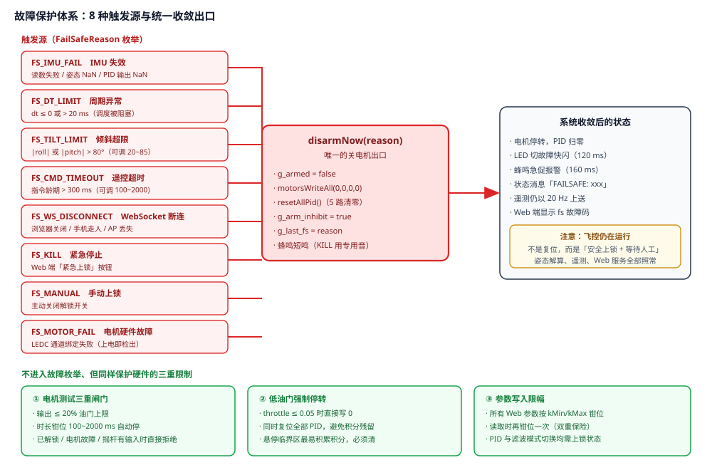
disarmNow() 单一出口，加上三道不进入枚举的额外保护无论从哪条路径发现故障，最终都调用同一个函数 disarmNow(reason)。它按固定顺序做七件事：
g_armed = falseg_arm_inhibit = trueg_last_fs 并写状态消息BUZ_KILL）为什么坚持"单一出口"？如果每个故障分支各自写一套关电机逻辑，早晚会有某个分支忘了清积分或者忘了停报警音。用户看到的现象是"电机停了但蜂鸣器还在尖叫"或者"解锁后飞机猛地一抽"——这类 bug 极难定位。收敛到一个函数后，新增故障类型只需加一个枚举值，代码改动量归零。
v1.1 起芯片欠压复位（brownout）已关闭（setup() 首条语句清 RTC_CNTL_BROWN_OUT_ENA，与 Flix 飞控同款做法）。原因：1S 锂电 + LDO 供电压差余量小，四电机满载浪涌会把 3.3V 轨拉到芯片欠压阈值（约 2.43V）以下，触发芯片硬复位——实测表现为「放地上推油到即将离地必重启、手上测试却正常」（临界油门=电流最大时刻）。关闭后软件侧 FS_ 故障码不受影响，但真欠压时芯片不再自保护复位，只剩蜂鸣器三级电压告警（<3.70V 慢鸣 / <3.50V 快鸣 / <3.30V 急促），请飞手留意电压、及时返航。治本方向：供电线加粗、电源加电解电容、或用独立 BEC 给飞控供电。
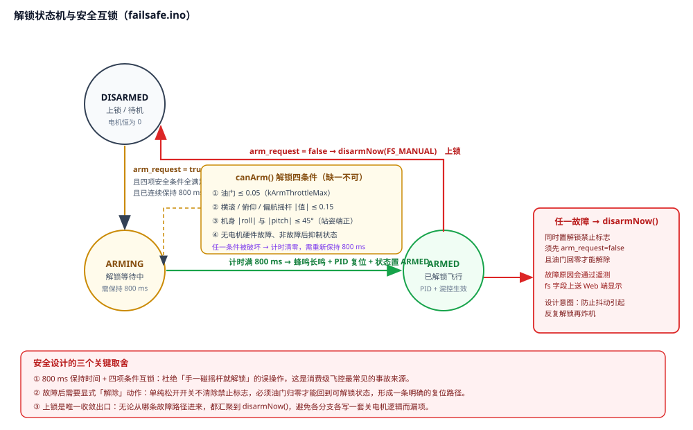
| 条件 | 要求 | 防的是什么 |
|---|---|---|
| ① 油门 | ≤ 0.05（kArmThrottleMax） | 避免带油门解锁，一解锁电机就猛转 |
| ② 摇杆 | 横滚 / 俯仰 / 偏航 |值| ≤ 0.15（kStickCenterMax） | 避免带着操纵指令解锁，起飞瞬间就偏航 |
| ③ 姿态 | |roll| 与 |pitch| ≤ 45° | 避免倒着或大角度倾斜时解锁 |
| ④ 状态 | 无电机硬件故障、不在故障抑制中 | 避免电机故障后反复尝试解锁 |
四条件必须连续保持 800 ms（kArmHoldMs）才真正解锁。任何一帧被破坏，计时立即清零重来。这个设计直接针对消费级飞控最常见的事故——"手一碰摇杆开关就解锁起飞"。
注意：故障后不会自动恢复可解锁状态。
必须先关闭解锁开关（arm_request = false）且把油门归零，解锁禁止标志才被清除。这个"必须显式复位"的设计是有意的：故障刚发生时，机体姿态、电机状态往往还没稳，让操作者主动做一次"我确认安全了"的动作，比系统自作主张重新允许解锁安全得多。
| 保护 | 规则 |
|---|---|
| 低油门强制停转 | throttle ≤ 0.05 时直接写 0 并复位全部 PID。悬停临界区最容易积累积分，必须清。 |
| 电机测试三重闸门 | 输出 ≤ 20%；时长钳位 100~2000 ms 且到时自动停；已解锁 / 电机故障 / 摇杆有输入时命令直接被拒绝并回 ack。 |
| 参数双重限幅 | 写入时钳位，从 NVS 读出后再钳位一次，防止旧固件残留值造成越界。 |
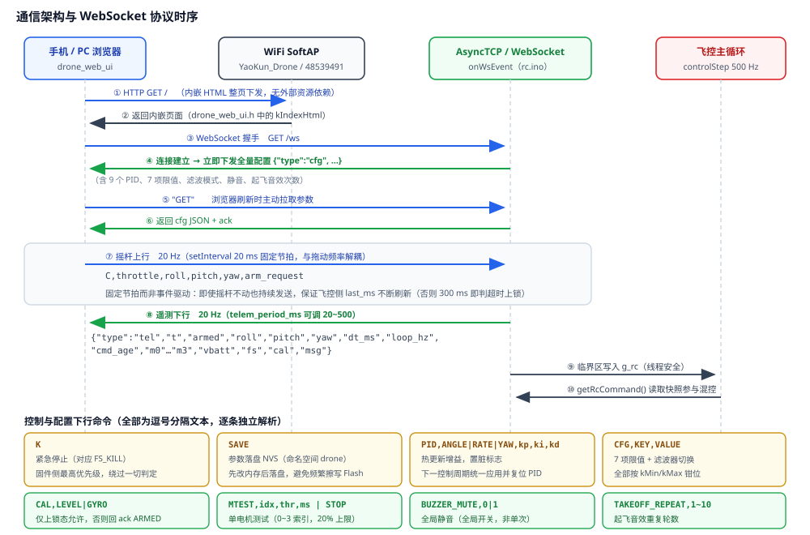
飞控上电即开启 SoftAP 并注册三类路由：/ 返回内嵌单页应用，/health 返回 OK（用于探测设备是否在线），/ws 是 WebSocket 端点。浏览器访问 http://192.168.4.1 拿到页面后立刻建立 WebSocket 连接，连接建立瞬间固件就把全量配置推给前端，之后进入 20 Hz 双向循环。
为什么用 WebSocket 文本帧而不是二进制 MAVLink？本工程的定位是"浏览器直连遥控"，操作者就是拿着手机的人而不是地面站。文本 JSON 换来三个实际好处：① 串口助手、浏览器控制台、Python 脚本都能直接收发，调试门槛为零；② 前端解析一行 JSON.parse，不需要引入 mavlink 解析库和消息注册表；③ 没有字节序和字段对齐问题，人肉可读。代价是带宽略高（每帧约 200 字节 × 20 Hz ≈ 4 KB/s），对 WiFi 来说完全无压力。
C,throttle,roll,pitch,yaw,arm_request
例：C,0.320,-0.150,0.080,-0.200,1
油门 30% 横滚 俯仰 偏航 解锁请求前端用 setInterval(…, 20) 固定节拍发送，与用户手势频率无关。这是为了保证即使摇杆不动，指令帧也持续刷新——固件侧靠 cmd_age > cmd_timeout（默认 300 ms）判定失联，若改成"只有动了才发"，静止状态下 300 ms 后就会被判定超时上锁。
| 命令 | 作用 |
|---|---|
K | 紧急停止，对应 FS_KILL，固件侧最高优先级 |
GET | 主动拉取全量配置（浏览器刷新或点「获取参数」） |
SAVE | 把当前内存参数落盘到 NVS（对应界面「保存参数」） |
PID,ANGLE\|RATE\|YAW,kp,ki,kd | 热更新某组 PID 增益，置脏标志，下一控制周期统一应用并复位 PID |
CFG,KEY,VALUE | 修改 7 项飞行限值或切换滤波器模式，全部按 kMin/kMax 钳位 |
CAL,LEVEL\|GYRO | 请求水平校准 / 陀螺标定，仅上锁态允许 |
MTEST,idx,thr,ms / MTEST,STOP | 单电机测试 / 停止测试 |
BUZZER_MUTE,0\|1 | 蜂鸣器全局静音（写入即存 NVS） |
TAKEOFF_REPEAT,1~10 | 起飞音效重复轮数 |
{"type":"tel","t":1234567,"armed":1,"roll":-3.21,"pitch":1.05,"yaw":45.30,
"dt_ms":2.01,"loop_hz":497.5,"cmd_age":42,"m0":0.310,"m1":0.298,
"m2":0.295,"m3":0.305,"vbatt":3.842,"fs":0,"cal":"IDLE","msg":"ARMED"}| 字段 | 含义 |
|---|---|
armed | 是否已解锁 |
roll/pitch/yaw | 姿态角（度），已扣除水平校准偏置 |
dt_ms / loop_hz | 实际控制周期与循环频率，调参时判断算力是否吃紧的关键指标 |
cmd_age | 遥控指令龄期（毫秒），逼近 300 ms 就要松手找问题了 |
m0~m3 | 四电机实际输出（0~1），判断混控是否正确、是否饱和 |
vbatt | 电池电压，读取失败时为 null 而非 0 |
fs | 故障原因码，取值见 7.1 节 |
cal / msg | 校准状态与人类可读状态消息 |
所有控制命令都有 {"type":"ack","op":"…","tag":"…","ok":0|1,"msg":"…"} 应答，msg 给出具体原因：ARMED（已解锁时下发校准）、MOTOR_FAIL、RC_ACTIVE（摇杆有输入时下发电机测试）、BAD_IDX、QUEUED、RUN、MUTED 等。前端把它映射为中文提示并显示 2 秒，让「改了参数没生效」这类问题变得可诊断。
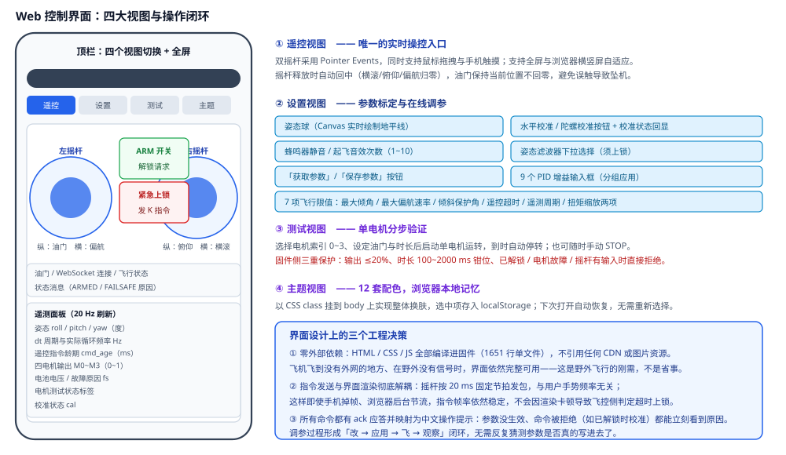
零外部依赖不是省事，是刚需。整个界面 1651 行全部编译进固件，不引用任何 CDN、字体文件或图片。野外飞行没有外网、在干扰环境下 CDN 请求可能超时几分钟——如果界面依赖外部资源，那正是飞机最容易出问题的时候。所以这里刻意做成"一个 HTML 文件就是完整应用"，浏览器拿到页面后立刻可用。
| 视图 | 内容 |
|---|---|
| 遥控 | 左摇杆（纵油门 / 横偏航）、右摇杆（纵俯仰 / 横横滚）、ARM 开关、紧急上锁按钮、油门与连接状态、状态消息、8 项遥测读数 |
| 设置 | Canvas 姿态球（含地平线）、三轴读数、水平校准与陀螺标定按钮及状态回显、蜂鸣器静音与起飞音效次数、滤波器下拉选择、获取/保存参数、9 个 PID 输入框、7 项飞行限值 |
| 测试 | 电机索引选择、油门与时长设定、单电机启停 |
| 主题 | 12 套配色网格（浅色 / 暗黑 + 海棠 / 朱红 / 藕荷 / 湖蓝 / 晴蓝 / 藏青 / 葱绿 / 甘青 / 翡翠 / 松花），点击即换肤，选中项存 localStorage |
右摇杆（俯仰 / 横滚）松手时三轴立即归零，回到「姿态自稳」状态；左摇杆的油门则保持当前位置不回零。若油门也回零，飞机会瞬间掉高度。刻意让两个摇杆行为不同，是为了让"松手"这个动作的含义明确——姿态回稳、高度自己掉，操作者心里有数。
这套飞控没有屏幕，蜂鸣器和三色灯就是它的「仪表盘」。作者把 14 种提示音和 3 色灯语设计成一套完整的反馈语言：不用连网页、不用看串口，光靠听和看就能知道飞机正处在什么状态、出了什么事。整套系统的实现原则是彻底的非阻塞——所有音效灯效都由 millis() 时间戳驱动的状态机刷新（buzzerUpdate() / ledUpdate() 在主循环里轮询），全程没有一处 delay()，500 Hz 控制循环永远不会被一声「嘀」卡住。
先看一遍从上电到降落的完整生命周期——每个阶段声音和灯光都在配合讲故事：
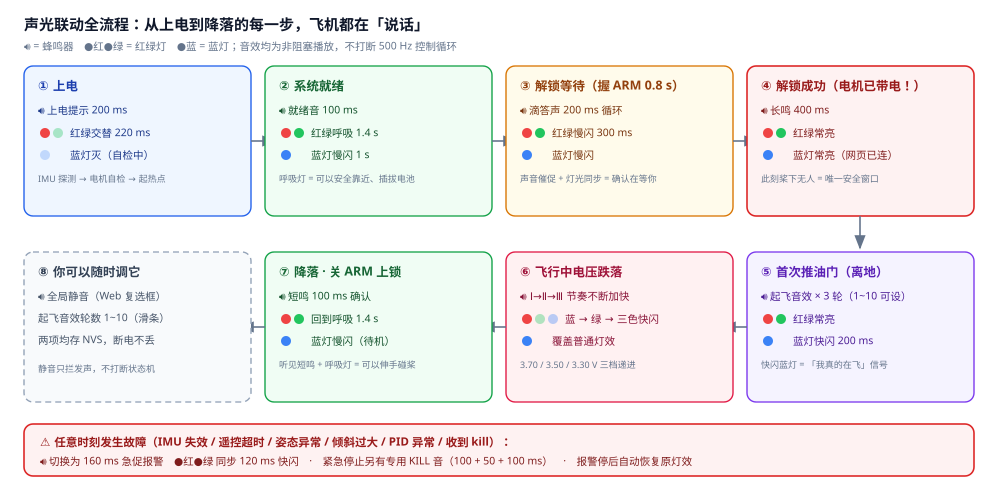
两条反馈通道各管一摊，互不干扰：红绿灯表达飞控核心状态（启动 / 待机 / 解锁 / 故障），蓝灯表达遥控链路状态（有没有连上网页、是否真的在飞）。这样「灯在快闪」时你不用猜是故障还是飞行——看颜色就分得清。
14 种音效按用途分五类：状态播报（单次）、校准确认（连击）、起飞（重复）、等待催促（循环）、报警（循环）。每一段的节奏都对应 hardware.ino 里状态机的真实参数：
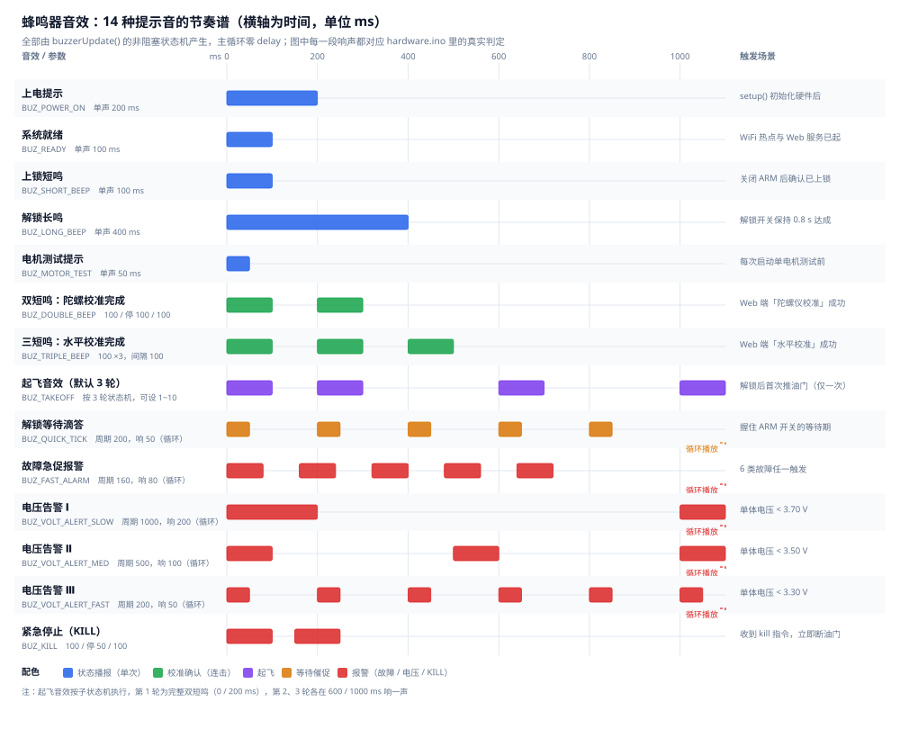
| 音效（枚举） | 节奏 | 触发场景与要点 |
|---|---|---|
BUZ_POWER_ON 上电 | 单声 200 ms | setup() 完成硬件初始化后立即响，等于「通电自检通过」。 |
BUZ_READY 就绪 | 单声 100 ms | WiFi 热点与 Web 服务起来后响，与蓝灯转入慢闪同步。 |
BUZ_SHORT_BEEP 短鸣 | 单声 100 ms | 关闭 ARM 时确认上锁——听到它才说明电机真的断电了。 |
BUZ_LONG_BEEP 长鸣 | 单声 400 ms | 解锁开关保持约 0.8 s 达成时响起，从这一刻起桨下就是危险区。 |
BUZ_MOTOR_TEST 电机测试 | 单声 50 ms | 每次启动单电机测试前提示，留出「手离开桨」的反应时间。 |
BUZ_DOUBLE_BEEP 双短鸣 | 100 / 停 100 / 100 | Web 端「陀螺仪校准」成功。 |
BUZ_TRIPLE_BEEP 三短鸣 | 100 ×3，间隔 100 | Web 端「水平校准」成功。两种校准靠连击次数区分，闭眼都能分。 |
BUZ_TAKEOFF 起飞 | 双短鸣 × 3 轮（1~10 可设） | 解锁后首次推油门触发一次（g_takeoff_sounded 标志防重复）。 |
BUZ_QUICK_TICK 滴答 | 周期 200 / 响 50，循环 | 解锁等待期的催促声，与红绿慢闪同步，松手即停。 |
BUZ_FAST_ALARM 急促报警 | 周期 160 / 响 80，循环 | 六类故障（IMU 失效 / 遥控超时 / 姿态异常 / 倾斜过大 / PID 异常 / 周期超限）任一触发。 |
BUZ_VOLT_ALERT_SLOW | 周期 1000 / 响 200 | 单体电压 < 3.70 V，Ⅰ 级。 |
BUZ_VOLT_ALERT_MED | 周期 500 / 响 100 | < 3.50 V，Ⅱ 级。 |
BUZ_VOLT_ALERT_FAST | 周期 200 / 响 50 | < 3.30 V，Ⅲ 级，濒临过放。 |
BUZ_KILL 紧急停止 | 100 / 停 50 / 100 | 收到 kill 指令立即断油门时的专用音，不会被其它音效覆盖（buzzerPlay() 里唯一有豁免权的音效）。 |
一个值得知道的细节：起飞音效的注释写的是「重复多次双短鸣」，但按子状态机逐步推演，phase==0 分支只负责关断、不补发声——实际听感是第 1 轮完整双短鸣（0 / 200 ms），第 2、3 轮各只在 600 / 1000 ms 响一声。若希望每轮都是规整的双短鸣，把 phase==0 分支里的 buzzerSet(false) 改为先响一声再进入 phase==1 即可。这是读代码时发现的行为与注释不符之处，先如实记录。
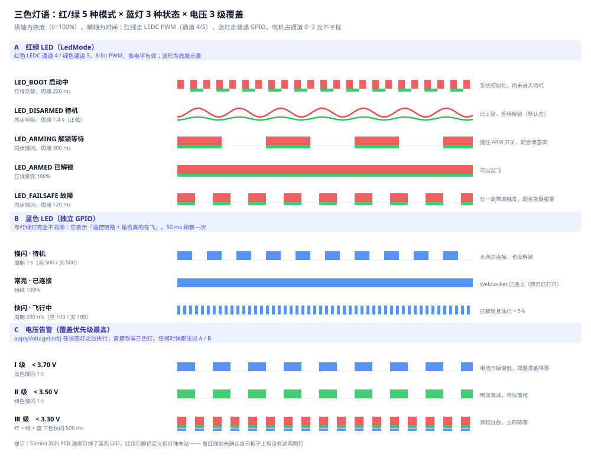
红绿灯由 g_led_mode 驱动（LEDC 通道 4/5，与电机通道 0~3 完全隔离，互不打架），蓝灯由主循环里一段 50 ms 刷新的独立逻辑控制：
| 灯 | 状态 | 表现与含义 |
|---|---|---|
| 红 + 绿 LEDC PWM 通道 4 / 5 | LED_BOOT 启动中 | 红绿交替闪 220 ms——系统初始化，尚未进入待机。 |
LED_DISARMED 待机 | 红绿同步呼吸 1.4 s（正弦渐变）——已上锁，呼吸灯 = 可以安全靠近。 | |
LED_ARMING 解锁等待 | 同步慢闪 300 ms + 滴答声——正在等你确认。 | |
LED_ARMED 已解锁 | 红绿常亮——电机带电，远离桨。 | |
LED_FAILSAFE 故障 | 同步快闪 120 ms + 急促报警——需要立即处理。 | |
| 蓝 普通 GPIO 50 ms 刷新 | 慢闪（周期 1 s） | 待机：没有网页连接，也未解锁。 |
| 常亮 | WebSocket 已连接——有人正开着网页遥控它。 | |
| 快闪（周期 200 ms） | 飞行中：已解锁且油门 > 5%。「蓝灯快闪 = 我真的在飞」。 | |
| 电压覆盖 优先级最高 | Ⅰ 级 < 3.70 V | 蓝色慢闪——电量偏低，准备降落。 |
| Ⅱ 级 < 3.50 V | 绿色慢闪——明显衰减，尽快落地。 | |
| Ⅲ 级 < 3.30 V | 红绿蓝三色快闪——濒临过放，立即降落。 |
为什么要一层「覆盖」而不是改状态？电压告警由 applyVoltageLed() 在状态灯刷新之后直接改写三色灯，不改动 g_led_mode 本身。这样告警只「借走」灯几秒，电压恢复或降落后灯语原样接续，两个逻辑完全解耦——比在五个 LedMode 里各插一种告警态干净得多。
每种音效都是「子状态 + 截止时间戳」的小状态机，由 buzzerUpdate() 轮询推进。任何时刻主循环都不会等一声播完——这对 500 Hz 实时控制是底线要求。
buzzerSet() 开头检查静音标志：静音时状态机照常推进，只是不驱动引脚。取消静音后一切自然接续，不会出现「静音期间状态卡死」。
buzzerStopLoop() 只停 5 种循环音（滴答 / 报警 / 三级电压），不砍刚触发的单次音。所以上锁短鸣不会被紧接着的报警「吃掉」，提示音永远完整。
静音开关与起飞音效轮数在 Web 端设置后写入 NVS（BUZZER_MUTE / TAKEOFF_REPEAT 命令），断电重启自动恢复，不用每次重设。
drone_types.h 的 BuzzerPattern 里加一项（如 BUZ_CAL_FAIL）。buzzerPlay() 的 switch 里给时长；复杂节奏（连击/循环）在 buzzerUpdate() 里加一个 if (g_buzzer_pattern == ...) 分支，用 g_buzzer_sub_state 推进。buzzerPlay(你的音效)，完毕。听音辨障速查：一声 200 ms = 上电自检过 · 一声 100 ms = 就绪 / 已上锁 · 两短 = 陀螺校准好 · 三短 = 水平校准好 · 长鸣 = 已解锁（危险） · 嘀嘀嘀（快）= 故障 · 慢滴滴→快滴滴 = 电压在掉 · 两声急促 = 紧急停止。
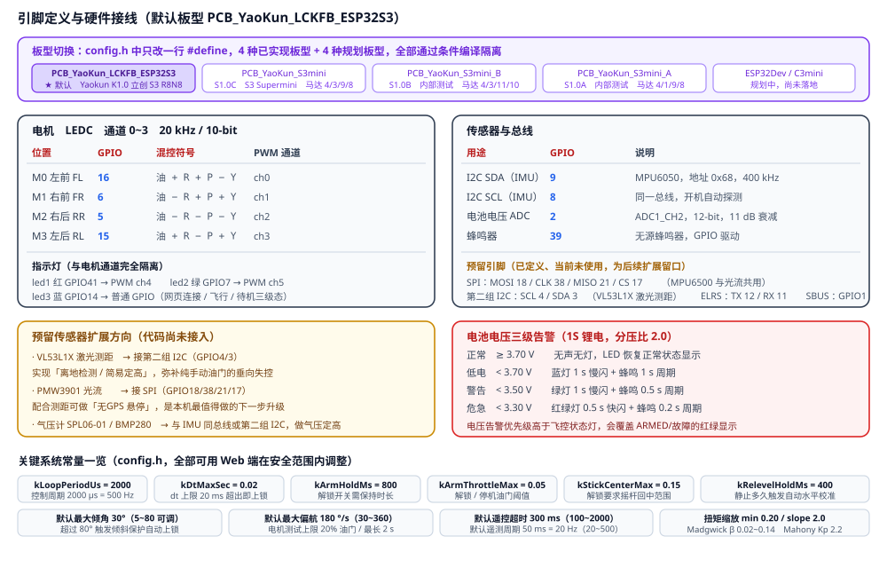
所有板型差异集中在 config.h 的条件编译里，切换只需修改开头的一行 #define。文件开头有一个兜底判断：若 PCB_YaoKun_* 系列宏一个都没定义，自动选中默认板型 PCB_YaoKun_LCKFB_ESP32S3。要注意的是：随手定义一个还不存在的规划板型宏（如 PCB_YaoKun_ESP32Dev）不会报错——它会被兜底逻辑拉回默认板型，用默认引脚编译通过，末尾的 #error 分支实际不可达。所以切换板型时只应填下表四个已实现的宏之一。
| 板型宏 | 对应硬件 | 电机引脚 |
|---|---|---|
PCB_YaoKun_LCKFB_ESP32S3★ 默认 | Yaokun K1.0 立创 ESP32-S3 R8N8 全功能板 | 16 / 6 / 5 / 15 |
PCB_YaoKun_S3mini | YaoKun S1.0C ESP32-S3 Supermini（已开源） | 8 / 4 / 3 / 9 |
PCB_YaoKun_S3mini_B | YaoKun S1.0B 内部测试版 | 10 / 4 / 3 / 11 |
PCB_YaoKun_S3mini_A | YaoKun S1.0A 内部测试第 1 版 | 8 / 4 / 1 / 9 |
PCB_YaoKun_ESP32Dev | 规划中：YaoKun D1.0 适配 30P ESP32 开发板 | |
S3mini 系列引脚紧张，实际 PCB 上红绿 LED 可能并未焊接（引脚号仍定义着，只是接了 LED 灯珠不亮）。另外 S1.0A/B 是内部测试版本，引脚对应实物，不建议直接照抄到自己的板子上。
不同 IMU 模块的贴装朝向不一样，代码用四个软件开关在软件层做重映射，不需要改动驱动：
| 模块 | SwapXY | FlipX | FlipY | FlipZ |
|---|---|---|---|---|
| 原厂 MPU6050（4×4 mm） | true | false | false | false |
| 国产 MPU6050（3×3 mm） | true | false | false | false |
| MPU6500 模块 | true | true | true | false |
SwapXY 分支里除了交换 X/Y，还把两轴角速度同时取反——这不是笔误：交换坐标系后手性会翻转，必须同时反向才能保持右手系。
验证方法（config.h 里也写了这段）：改完重新编译烧录，打开网页 → 设置页 → 观察姿态球。飞机向左倾斜约 30°，Roll 读数应为负值且地平线左低右高；飞机抬头，姿态球应显示天空（俯仰为正）；飞机低头，姿态球应显示地面（俯仰为负）。一般试 2~3 组组合就能找到正确配置。
GPIO2 走 ADC1_CH2，12-bit 分辨率 + 11 dB 衰减（可测至约 3.9 V），配合 PCB 上 100K + 100K 的分压电路（比值 2.0）覆盖 1S 锂电 4.2 V 满电范围。告警分三级（正常态不报警）：
| 等级 | 阈值（1S） | 灯光 | 蜂鸣 |
|---|---|---|---|
| 正常 | ≥ 3.70 V | 恢复正常状态显示 | 无 |
| 低电 | < 3.70 V | 蓝灯 1 s 慢闪 | 1 s 周期 |
| 警告 | < 3.50 V | 绿灯 1 s 慢闪 | 0.5 s 周期 |
| 危急 | < 3.30 V | 红绿灯 0.5 s 快闪 | 0.2 s 周期 |
电压告警的灯光优先级高于飞控状态灯——低电量是比"是否解锁"更紧急的信息，必须让飞行员第一时间看到。
| 总线 | 引脚（默认板型） | 规划用途 |
|---|---|---|
| SPI | MOSI 18 / CLK 38 / MISO 21 / CS 17 | PMW3901 光流模块；MPU6500 也走这组 |
| 第二组 I2C | SCL 4 / SDA 3 | VL53L1X 激光测距模块 |
| UART | TX 12 / RX 11 | ELRS 接收机（未来接实体遥控器） |
| SBUS | GPIO 1 | SBUS 接收机输入（UART 硬件反相） |
以上四组引脚在当前代码中只是"定义"，没有任何驱动实现。收到 Web 遥控指令之外，固件不会从这些接口读任何数据。当前版本只能通过浏览器操控。
| 项目 | 要求 |
|---|---|
| 集成开发环境 | Arduino IDE 2.x（推荐）或 Arduino CLI / PlatformIO |
| 开发板支持包 | Espressif Systems → esp32（版本 ≥ 2.0.14，需支持 ESP32-S3） |
| 开发板型号 | ESP32S3 Dev Module（或对应开发板的等效选项） |
| 第三方库 | ESPAsyncWebServer、AsyncTCP（见下方安装说明） |
| 串口驱动 | CH340 / CP2102 等对应 USB 转串口芯片驱动 |
关于 AsyncTCP：这是 ESPAsyncWebServer 的硬依赖。ESP32 官方库管理器里的同名包默认分支面向 ESP32 而非 ESP32-S3，在 S3 上编译可能报错。稳妥做法是克隆 esphome/AsyncTCP 的 master 分支（已含 S3 支持），把文件夹放进 Arduino 的 libraries 目录；IDE 里若同时存在库管理器版本与手动版本，手动版本优先。
# 方式一：Arduino IDE 库管理器
# 搜索 ESPAsyncWebServer → 安装
# 搜索 AsyncTCP → 若编译报错，改用方式二
# 方式二：手动安装（ESP32-S3 推荐）
cd <Arduino IDE 安装目录>/libraries
git clone https://github.com/esphome/AsyncTCP.git
git clone https://github.com/mathieucarbou/ESPAsyncWebServer.git
# 若 ESPAsyncWebServer 也报错，克隆 esphome 分支：
# git clone -b esphome https://github.com/mathieucarbou/ESPAsyncWebServer.gitgit clone https://github.com/YaoKunS/ESP32-Drone.git（或到仓库页面下载 zip）。然后 Arduino IDE → 文件 → 打开项目 → 选择 YaoKun_Drone/YaoKun_Drone.ino。IDE 会自动把同目录所有 .ino / .h 纳入工程，不要只复制单个文件。ESP32S3 Dev Module；工具 → Upload Speed → 921600（不稳定时降到 115200）；工具 → Flash Size → 4MB (FS:1MB OTA:0.5MB) 或按实际板卡配置。config.h，确认开头默认的 #define PCB_YaoKun_LCKFB_ESP32S3 与你的 PCB 一致。若不是，改这一行后即可，其余引脚不用动。Boot... → LEDC attach: 1 1 1 1 → Detected MPU6050 (I2C) → Gyro calibration done → Ready. Open http://192.168.4.1/。烧录时必须知道的两个坑：
① 合并整片烧录会清 NVS。若你习惯用 esptool merge_bin 把 bootloader + partitions + app 合成一个 4 MB 镜像从头烧，偏移 0x9000 的 NVS 分区会被覆盖，WiFi 名称、IMU 识别结果、调好的 PID 全部丢失。调试期建议只用 IDE 的"上传"按钮（只写 app 分区）。
② 烧完停在下载模式。出现 ESP-ROM … boot:0x0 DOWNLOAD waiting for download 说明芯片停在 bootloader。先用 --before no-reset 连一下确认还能连上，再回读 0x10000 首字节是否为 0xE9 确认镜像完好；run / --after hard-reset 可能反复落回下载模式（BOOT 脚被拉低），改用 --after watchdog-reset 即可跳出。
Serial 输出：115200 波特，用于查看 IMU 识别结果与 LEDC 绑定状态
Flash 频率：80 MHz（默认）
PSRAM：ESP32-S3 R8N8 开发板自带 PSRAM，工具里按板卡实际情况设置
核心数 / 分核频率：默认即可，控制循环跑在哪个核心不影响正确性若需要高频姿态调试输出，把 config.h 中的 kEnableSerialAttDebug 改为 true，会以 100 Hz 打印 ATT,roll,pitch,yaw。正常飞行时务必保持 false——串口打印是阻塞操作，会挤占控制周期时间。
安全提示：首次装机务必拆掉螺旋桨完成下面第 1~4 步。电机转向和混控符号的错误在带桨时会造成炸机。等第 4 步全部通过再装桨。
Ready. Open http://192.168.4.1/。若停在 IMU init FAILED，说明没识别到传感器——检查 I2C 接线（SDA=9 / SCL=8）或确认模块是否为 MPU6500。YaoKun_Drone（密码 48539491）→ 浏览器打开 http://192.168.4.1 → 进「设置」页 → 看姿态球是否水平（不应歪）→ 点「水平校准」听三短鸣 → 若姿态球歪了，切换到互补滤波模式对照看读数，判断是不是 IMU 轴映射错了（见 10.2 节）。kYawTorqueSign=-1 适配的出厂布局，见 5.3 节）。若位置错了查 config.h 引脚映射；若某颗转向不符，对调该电机两根输出线即可反转。注意：四个电机必须呈「对角两两同向」布局——相邻同向的非法布局偏航控制力矩恒为零，任何软件都无法补救，必须先改硬件。| 想做什么 | 怎么操作 |
|---|---|
| 解锁 | 油门归零 + 三摇杆回中 + 机身水平 → 打开 ARM 开关 → 保持 1 秒 → 听到长鸣即成功 |
| 上锁 | 关闭 ARM 开关，或点「紧急上锁」按钮 |
| 紧急停止 | 点「紧急上锁」→ 发 K → 电机立即停转（最优先） |
| 飞偏了修回来 | 减小油门让它落地 → 修正姿态 → 重新解锁。不要在空中大幅反向推杆找平衡 |
| 调 PID | 「设置」页改 Kp/Ki/Kd → 点「应用」→ 飞出感受 → 满意后点「保存参数」写入 NVS |
| 换姿态解算器 | 「设置」页下拉选择 → 应用（必须上锁）→ 自动存 NVS |
| 恢复出厂参数 | 清除 NVS（烧录时擦除 NVS 分区）后重新烧录 |
不要同时调两个环。外环在动，内环的行为就无法判断，你会分不清"反应慢"是外环 Kp 小还是内环跟不上。先把内环调稳，再调外环——这是串级控制的唯一正确顺序。
RATE 组）先在设置页把角度环 Kp 降到 0.5 左右，让外环变弱，减少干扰。然后：
ANGLE 组）内环稳定后再动外环：
YAW 组）偏航通常不用调，默认值即可工作。若转向有轻微延迟可把 Kp 从 0.030 提到 0.040；不要给偏航加 Ki——航向角本来就在漂，积分只会把漂移放大成持续偏转。
| 参数 | 默认 | 可调范围 | 整定建议 |
|---|---|---|---|
| 最大倾角 | 30° | 5~80° | 新手保持 20~30°。这是"最大允许倾斜"，直接决定飞机能被压到多平 |
| 最大偏航速率 | 180 °/s | 30~360 | 新手 120~180 足够。太大容易转晕自己 |
| 倾斜保护角 | 80° | 20~85° | 越低越安全。60~70° 就能有效保护，别为了"能压得更平"往上调 |
| 遥控超时 | 300 ms | 100~2000 | 弱信号环境可适当放宽到 500~800；信号好时别低于 200，否则偶发丢包就上锁 |
| 遥测周期 | 50 ms | 20~500 | 默认 20 Hz 够用。改成 20 ms（50 Hz）会明显增加 WiFi 负担 |
| 扭矩缩放 | 0.20 / 2.0 | 0~1 / 0~4 | 悬停手感发死就提高 min 或 slope；振荡则降低 |
每次只改一个参数。改完必须实测并记录，改了三项就分不清是哪项起的作用。所有参数在 NVS 里持久化，不点「保存参数」重启就丢——但在地面调试时建议每次都点保存，避免意外断电丢失配置。
| 字段 | 正常范围 | 异常含义 |
|---|---|---|
loop_hz | 480~500 | 长期低于 450 说明有阻塞源（串口打印、网络拥塞），控制精度已下降 |
dt_ms | 约 2.0 | 偶发跳到 5~10 说明有单次阻塞（WS 推送、Flash 写入）。持续 > 5 会触发 dt 保护 |
cmd_age | < 50 | 逼近 300 会突然上锁。说明网页没连上或 WiFi 丢包 |
m0~m3 | 悬停时 0.25~0.45 | 长期贴着 0 或 1 说明扭矩不足或偏置不对；四电机差值大说明配平或重心有问题 |
fs | 0 | 非 0 直接读故障码，见 7.1 节 |
| 症状 | 可能原因 | 处置 |
|---|---|---|
串口停在 IMU init FAILED |
没识别到 IMU | 确认 SDA=9 / SCL=8 接线；确认模块是 MPU6050（I2C）还是 MPU6500（SPI）；查 I2C 接线是否接反 |
| 姿态球歪着 / Roll 读数不对 | IMU 轴映射错 或 水平校准未做 | 先做水平校准；无效则按 10.2 节验证方法换 SwapXY/FlipX/FlipY 组合重烧 |
| 上电后飞机自己认为是倾斜的 | 陀螺标定时机身不静止 | 把飞机放平静止后重新上电，等就绪音结束再操作 |
| 推右摇杆飞机往左飞 | 电机接反或混控符号不符 | 拆桨，用测试页逐个核对电机索引与位置；确认是左右反了（整体镜像）还是旋转反了（单电机接反） |
| 打开 ARM 没反应 / 立刻又断开 | 解锁四条件未满足 | 油门推到最低、三摇杆回中、把飞机摆平、保持开关不动 1 秒以上 |
| 解锁后 1 秒自动上锁 | 遥控超时 | 看遥测 cmd_age。若接近 300ms，是网页连接不稳——确认还在热点上、关掉省电模式、靠近手机 |
| 飞行中突然上锁 | 倾斜超限 / WS 断连 / 遥控超时 | 看 fs 字段：4=TILT_LIMIT（撞到障碍或电机无力）2=WS_DISCONNECT（手机走远或息屏）1=CMD_TIMEOUT（链路问题） |
| 网页打不开 192.168.4.1 | 没连上热点 / 串口卡住 | 确认连的是 YaoKun_Drone（不是路由器同名 WiFi）；部分手机会提示"该 WiFi 无法访问互联网"并自动断开，需在设置里选"保持连接"或关闭该提示 |
| 网页时好时坏 / 遥测卡顿 | 多台设备信道干扰 | 只留一台飞机上电（多机同 SSID 会抢占同一信道）；手机切到飞行模式关掉数据；靠近路由器或改用 5G 频段 |
| 改完参数没效果 | 没点「应用」/ 没点「保存」 | 「应用」= 立刻生效（仅本次）；「保存参数」= 写入 NVS（重启仍保留）。两个都要点 |
| 校准按钮点了没反应 | 飞机已解锁 | 校准只允许上锁时进行，先关闭 ARM 开关 |
| 电机不转 / 单转 | 电调没上电 / 油门过低 | 确认电调 BEC 供电；注意本机 throttle ≤ 0.05 时强制停转，低于 5% 油门必然不转 |
| 串口能开网页打不开 | 固件版本过旧 / 编译未完成 | 确认已重新编译烧录；本工程 Web 界面对应较新版本固件 |
通用诊断三步法：① 看串口——有没有 Detected MPU6050/6500 和 LEDC attach: 1 1 1 1；② 看网页遥测——姿态对不对、loop_hz 是否接近 500、fs 是不是 0；③ 拆桨做单电机测试。三步能把九成问题定位到"传感器 / 链路 / 混控"三类。
| 设计点 | 价值 |
|---|---|
| 单一上锁出口 | 新增故障类型只需加一个枚举值，不存在"某个分支忘了关电机"的漏洞 |
| 安全路径也发遥测 | 故障时界面照样实时显示原因，不用盲猜 |
| 五组临界区保护 | FreeRTOS 双上下文下共享状态零竞争，且临界区都很短，不影响 500 Hz 时序 |
| 加速度计信任度 | 把"什么时候不能信加速度计"变成显式可计算的量，而不是靠固定权重碰运气 |
| 滤波器切换保连续 | 避免切换瞬间姿态跳变导致满扭矩抽飞——这是同类项目里常见的隐蔽 bug |
| 参数双重限幅 | 写入钳位 + 读出再钳位，防止旧固件残留值造成越界 |
| 固定节拍发包 | 界面卡顿不影响指令帧率，这是遥控系统稳定性的基础 |
| 注释密度极高 | 每个常数有出处、每个非直觉处有"为什么"，可作为中文飞控教材阅读 |
| 局限 | 影响与说明 |
|---|---|
| 无法定点悬停 | 只有 IMU，没有位置或垂向参考。松杆保持水平速度继续飘，松油门就掉高度。这不是 bug，是传感器配置决定的物理边界。 |
| 偏航会缓慢漂移 | 无磁罗盘，偏航角是陀螺纯积分结果，长时间飞行航向会偏。上锁静止时因静止检测会持续校正，飞行中无法校正。 |
| 只能浏览器操控 | SBUS / ELRS 引脚已定义但无驱动实现，当前版本没有实体遥控器支持。 |
| 没有黑匣子 | 故障后无法回放飞行数据定位原因。NVS 只存参数，不存飞行日志。 |
| 没有地面站协议 | 用 WebSocket 文本 JSON 而非 MAVLink，QGC 等地面站无法直接连接。这是"浏览器直连"定位的取舍。 |
| 无 OTA 升级 | 需 USB 重新烧录。 |
| 偏航权限偏小 | 输出限幅 ±0.3，比横滚俯仰保守。高速偏航时可能显得"转不动"。 |
| 代码未做模块化收尾 | controlStep()（约 250 行）仍在主文件里，hardware.ino 885 行同时承载四类驱动——能跑能读，但再往上加功能建议先拆分。 |
工程已在 PCB 与引脚层面为以下升级留好了口。按投入产出比排序：
| 优先级 | 项目 | 说明 |
|---|---|---|
| 高 | VL53L1X 激光测距 + PMW3901 光流 | 接 SPI + 第二组 I2C，做"无 GPS 悬停"——这是本机最值得做的升级，能从根本上解决无法定点的短板。原理：光流测水平位移，测距测高度，两者配合就能估计出水平速度并做定点修正。 |
| 高 | 气压计定高 | SPL06-01 或 BMP280，与 IMU 共总线。气压高度 + 卡尔曼滤波 + 双环 PID，把垂向也闭环，是实现"松杆悬停"的必经之路。 |
| 中 | SBUS 接收机支持 | GPIO1 已预留（UART 硬件反相）。接入实体遥控器后可脱离浏览器，带宽和延迟都会改善。注意 SBUS 是 100 Hz 远低于当前 20 Hz 指令的假设，需要相应调整超时阈值。 |
| 中 | QMC5883L 磁罗盘 | 校正偏航漂移，把偏航从单环升级为双环。但要注意磁场干扰（电机电流、扬声器磁铁），需做硬磁软磁校准。 |
| 中 | 飞行日志 / 黑匣子 | 把姿态、电机输出、故障状态循环写入 SPI Flash，异常后可通过 Web 端导出，用数据复盘而不是靠猜。 |
| 低 | MAVLink 协议 | 接入 QGC / Mission Planner。代价是要引入解析库和消息注册表，与当前"零依赖单页应用"的简洁性有冲突，需权衡。 |
| 低 | 代码拆分 | 把 controlStep() 拆成独立模块、hardware.ino 按驱动类型分成四个文件。当前 5173 行仍可读，但继续膨胀会失控。 |
如果只做一件事：做定高（测距或气压 + 双环 PID）。它带来的改变是质变级的——从"手动飞行"变成"能松杆的飞行"，是这个飞控从"能飞"到"好用"的分水岭。
下表对比耀坤飞控与 Flix、ESP-FC、ESP-Drone 三个主流开源项目。原评估表由 DeepSeek 生成，仅供参考；其中涉及本项目的客观数据（代码行数、板型数量、控制频率等）已按源码实测核对修正——例如行数为 5173 行（含 1651 行前端）而非 ~2500 行，板型为 4 种已实现 + 4 种规划而非 8 种。
| 架构维度 | 耀坤飞控 | Flix | ESP-FC | ESP-Drone |
|---|---|---|---|---|
| 开发框架 | Arduino（模块化文件） | Arduino（<2000 行） | 原生 ESP-IDF / Arduino | ESP-IDF + FreeRTOS |
| 控制循环频率 | 500 Hz | 1000 Hz | 1-2 kHz | 500 Hz |
| 操作系统 | 裸机大循环 | 裸机 | 裸机 | FreeRTOS |
| 协议支持 | WebSocket + HTTP | MAVLink (QGC) | Betaflight Configurator | CRTP + cfclient |
| 参数配置方式 | 网页直连调参 | MAVLink 参数服务 | Betaflight 配置器/CLI | cfclient 上位机 |
| 算法维度 | 耀坤飞控 | Flix | ESP-FC | ESP-Drone |
|---|---|---|---|---|
| 姿态解算器 | Madgwick / Mahony / 互补滤波（3 种可选 + 热切换） | 互补滤波 | 四元数 + 互补滤波 | Crazyflie EKF |
| 滤波器种类 | 低通 + 加速度计信任度自适应 | LPF | LPF、动态 Notch、RPM 滤波 | 标准滤波 |
| 陀螺仪支持 | MPU6050/6500（自动检测 I2C/SPI） | MPU9250/6500/6050 | MPU6050/9250、ICM20602、BMI160 | MPU6050 |
| 自适应算法 | ✅ 加速度计信任度动态调整 | ❌ | ✅ 动态 Notch 滤波 | ❌ |
| 滤波器调参 | Web 界面 | CLI | Betaflight 界面 | cfclient |
| 控制维度 | 耀坤飞控 | Flix | ESP-FC | ESP-Drone |
|---|---|---|---|---|
| 控制架构 | 串级 PID（角度环→角速率环） | 三维二级串级 PID | Betaflight 风格 PID | Crazyflie PID |
| 偏航控制 | 独立偏航角速率 PID | 集成在三维 PID | 标准 PID | 标准 PID |
| 扭矩缩放/抗饱和 | ✅ 低油门动态缩放 + 积分抗饱和 | ❌ | Betaflight 标准 | 标准 |
| 积分抗饱和 | ✅ | ✅ | ✅ | ✅ |
| 飞行模式 | 自稳（可扩展定高） | ACRO / ANGLE | ACRO / ANGLE / AIRMODE | 自稳 / 定高 / 定点 |
| 教育维度 | 耀坤飞控 | Flix | ESP-FC | ESP-Drone |
|---|---|---|---|---|
| 代码行数 | 5173 行（含 1651 行前端），模块化 | <2000 行，模块化 | 较大（模拟 Betaflight） | 中等（FreeRTOS） |
| 学习难度 | ★★☆☆☆（Arduino 友好） | ★★☆☆☆ | ★★★★☆ | ★★★★☆ |
| 中文文档 | ✅ 完善（注释 + 教程） | 社区翻译 | 较少 | ✅ 官方中文文档 |
| 推荐人群 | 嵌入式初学者 / 电子爱好者 / 教师 / 科创竞赛 | 极简风格爱好者 | 穿越机进阶玩家 | 专业开发者 |
| 教学价值 | ★★★★★ | ★★★★☆ | ★★★☆☆ | ★★★★☆ |
| 功能 | 耀坤飞控 | Flix | ESP-FC | ESP-Drone |
|---|---|---|---|---|
| WiFi 无线控制 | ✅ Web 网页（免 APP） | ✅ MAVLink + QGC | ✅ ESP-NOW、SBUS 等多种 | ✅ APP / 游戏手柄 |
| 手机 APP 控制 | 通过网页（无需安装） | QGC 地面站 | ❌ | ✅ 专用 APP |
| 地面站支持 | 网页定制 | QGroundControl | Betaflight Configurator | cfclient |
| 黑盒记录 | ❌（可扩展 SD） | ✅ 日志分析 | ✅ | ✅ |
| 电机测试 | ✅ 网页端 | 未明确 | ✅ Betaflight 滑块 | ✅ 上位机调试 |
| 传感器校准 | ✅ 陀螺仪 / 水平 | ✅ IMU 校准 | ✅ Betaflight 界面 | ✅ cfclient |
| 定高 / 定点 | 可扩展（预留 I2C/SPI） | 计划中 | ❌ | ✅ |
对比总结：耀坤飞控的差异化定位是「麻雀虽小五脏俱全」——在保持 Arduino 低门槛的基础上实现商业级飞控的核心架构。它不仅是一架可以飞的无人机，更是一本活教材：每个模块都在演示嵌入式系统如何做工程化的软件架构。尤其适合正在学习嵌入式系统的学生、寻找开源飞控项目的开发者、需要教学案例的教师，以及希望快速验证算法的科研人员。
| 渠道 | 地址与说明 |
|---|---|
| GitHub 代码仓库 | https://github.com/YaoKunS/ESP32-Drone 固件全部源码、Web 界面、实物图。克隆： git clone https://github.com/YaoKunS/ESP32-Drone.git。GPL v3 协议，欢迎 Star / Fork / Issue。 |
| 立创开源硬件平台 | https://oshwhub.com/lindahe 耀坤的个人主页——耀坤无人机系列 PCB（星火计划 2026 开源项目）。原理图 / PCB 工程文件免费下载，嘉立创打样可直接下单。 |
| 哔哩哔哩视频教程 | https://space.bilibili.com/3707011699050767 「耀坤智联」主页——装机教程、飞行演示与系列讲解视频。 |
| 淘宝元器件套件 | https://shop35432590.taobao.com/ 淘宝店「耀坤智联」——本项目所需电子元器件套件，基础元件仅需 9.9 元。 |
支持项目：如果这个项目对你有帮助，欢迎到 GitHub 点一个 Star，或在 B 站关注「耀坤智联」追更教程——这些都是对开源作者最直接的支持。